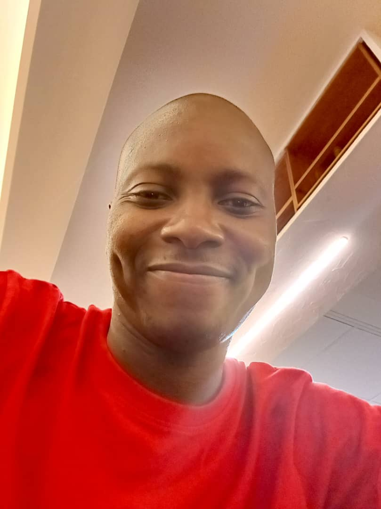

|  |
Sani Kana's ResumeWeb Developer | AI Automation | Content Writer |
I'm a web developer with 2 + years of experience. I have worked on a variety of projects, including a movie ranking system, a birthday invite system, and a website for a local charity. I am passionate about creating user-friendly and visually appealing websites that are easy to navigate and understand.
Date: June 2015 - April 2019
Major:
Business Information Systems
Degree:
Bachelor of Science
School:
University of Portsmouth, United Kingdom.
Date: May 2010 - July 2015
Major:
Software Engeneering
Degree:
Bachelor of Science
School:
NIIT Port Harcourt, Nigeria.
2022-Present
2022-2023